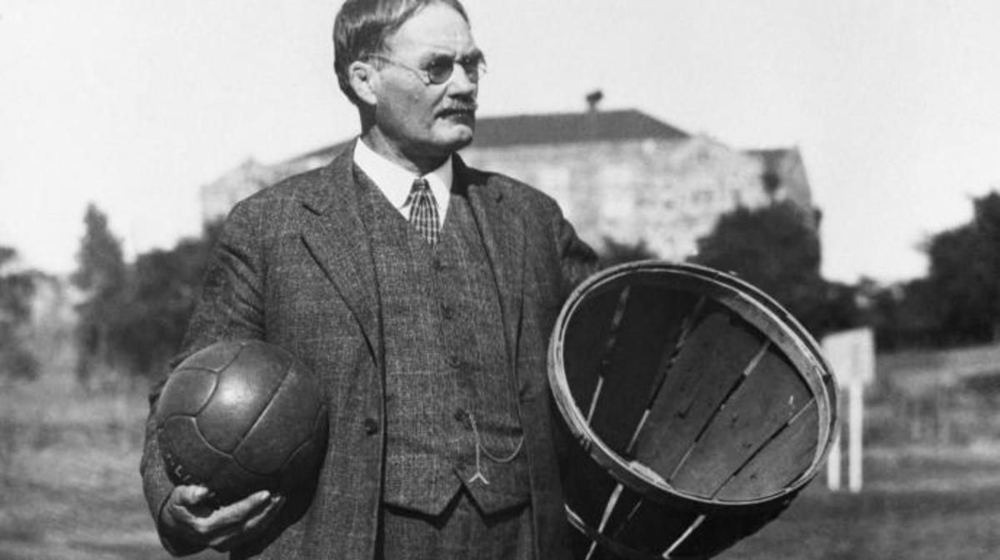

Basketball History
Basketball is a ball sport that was invented in 1891. The game was invented by Dr.James Naismith from Canada. James worked as a physical education professor and instructor at the International Young Men's Christian Association Training School. Naismith invented basketball to condition young athletes during the winter. Naismith used peach baskets as the hoops and balls similar to soccer balls, the balls were getting stuck in the basket everytime they scored, so they decided to remove the bottom of the baskets so the ball could go through.

Original Rules
- The ball may be thrown in any direction with one or both hands.
- The ball may be batted in any direction with one or both hands (never with the fist).
- A player cannot run with the ball. The player must throw it from the spot on which he catches it, allowance to be made for a man who catches the ball when running at a good speed if he tries to stop.
- The ball must be held in or between the hands; the arms or body must not be used for holding it.
- No shouldering, holding, pushing, tripping, or striking in any way the person of an opponent shall be allowed; the first infringement of this rule by any player shall count as a foul, the second shall disqualify him until the next goal is made, or, if there was evident intent to injure the person, for the whole of the game, no substitute allowed.
- A foul is striking at the ball with the fist, violation of Rules 3,4, and such as described in Rule 5.
- If either side makes three consecutive fouls, it shall count a goal for the opponents (consecutive means without the opponents in the mean time making a foul).
- A goal shall be made when the ball is thrown or batted from the grounds into the basket and stays there, providing those defending the goal do not touch or disturb the goal. If the ball rests on the edges, and the opponent moves the basket, it shall count as a goal.
- When the ball goes out of bounds, it shall be thrown into the field of play by the person first touching it. In case of a dispute, the umpire shall throw it straight into the field. The thrower-in is allowed five seconds; if he holds it longer, it shall go to the opponent. If any side persists in delaying the game, the umpire shall call a foul on that side.
- The umpire shall be judge of the men and shall note the fouls and notify the referee when three consecutive fouls have been made. He shall have power to disqualify men according to Rule 5.
- The referee shall be judge of the ball and shall decide when the ball is in play, in bounds, to which side it belongs, and shall keep the time. He shall decide when a goal has been made, and keep account of the goals with any other duties that are usually performed by a referee.
- The time shall be two 15-minute halves, with five minutes' rest between.
- The side making the most goals in that time shall be declared the winner. In case of a draw, the game may, by agreement of the captains, be continued until another goal is made.